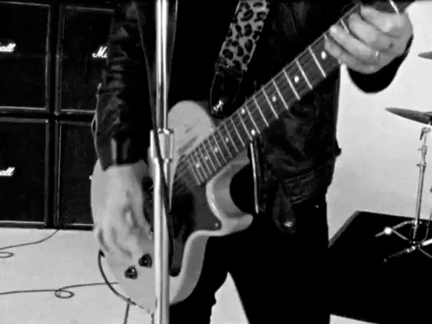

O que é pop punk?

O pop punk é um gênero musical que mistura elementos do punk rock com melodias mais acessíveis do pop. Surgiu nos anos 1970 e 1980, mas ganhou popularidade nos anos 1990 e 2000, com bandas como Green Day, Blink-182, Sum 41 e Simple Plan.
O pop punk é mais do que apenas um estilo musical — ele se tornou uma subcultura que marcou gerações, especialmente entre os anos 90 e 2000. O som característico do gênero combina a atitude crua do punk rock com melodias cativantes e letras emocionais ou irreverentes, criando um equilíbrio perfeito entre rebeldia e acessibilidade.
🎸 Origens e Influências
O gênero tem raízes no punk rock dos anos 70, com bandas como Ramones,
que já misturavam melodias simples e rápidas com uma pegada mais pop.
Nos anos 80, grupos como Descendents e Bad Religion começaram a moldar o som que viria a se tornar o pop punk, adicionando mais melodia ao hardcore punk.
🏁 Ascensão nos Anos 90
Nos anos 90, o pop punk explodiu com o sucesso do Green Day, especialmente com o álbum Dookie (1994), e do The Offspring com Smash (1994).
Essas bandas trouxeram o punk rock para o mainstream sem perder a energia e a atitude do gênero. Pouco tempo depois, o Blink-182 conquistou o público adolescente com álbuns como Enema of the State (1999), que se tornou um marco do gênero, misturando letras divertidas e emocionais com riffs rápidos e pegajosos.
💥O Auge nos Anos 2000
Os anos 2000 foram a era de ouro do pop punk. Bandas como Simple Plan, Sum 41, Good Charlotte, New Found Glory e Yellowcard dominaram as paradas de sucesso e a cultura pop.
O gênero ficou muito associado à juventude, à cultura do skate e às trilhas sonoras de filmes adolescentes, como American Pie e Os Sem Floresta. Além disso, o canal MTV ajudou muito
🖤O Pop Punk e o Emo
Com o tempo, o pop punk começou a se misturar com o emo, criando um som mais emotivo e introspectivo. Bandas como Fall Out Boy, My Chemical Romance, Paramore e All Time Low incorporaram letras mais pessoais e melodias melancólicas, conquistando um público ainda maior e expandindo os limites do gênero.
As Maiores Bandas do Pop Punk
Aqui estão as mariores bandas do genero pop punk, as que marcaram gerações e venderam milhões de cd's com seus hinos dos anos 90's-200's
Blink-182
img
Uma das bandas mais icônicas do pop punk, formada em 1992 na Califórnia. Conhecidos pelo humor irreverente e músicas sobre juventude, festas e relacionamentos, lançaram álbuns clássicos como Enema of the State (1999) e Take Off Your Pants and Jacket (2001). Hits como "All the Small Things" e "What's My Age Again?" marcaram gerações.
Green Day
img
Embora também sejam considerados punk rock, o Green Day ajudou a popularizar o pop punk mundialmente com o álbum Dookie (1994), que contém sucessos como "Basket Case" e "When I Come Around". Em 2004, reinventaram sua carreira com American Idiot, um álbum conceitual que trouxe um tom mais político e épico ao gênero.
Sum 41
img
Vindos do Canadá, estouraram no início dos anos 2000 com seu som que misturava pop punk e elementos do metal. Seu álbum All Killer No Filler (2001) trouxe hits como "Fat Lip" e "In Too Deep", tornando-os um dos maiores nomes do estilo.
The Offspring
img
Misturando punk rock e pop punk, o Offspring surgiu nos anos 80, mas foi com Smash (1994) e músicas como "Self Esteem" e "Come Out and Play" que ficaram mundialmente conhecidos. Continuaram relevantes nos anos 2000 com hits como "Pretty Fly (for a White Guy)".
img
img
img